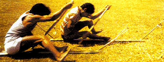

Asol Aap is originally a traditional game of Andaman and Nicobar Islands. Asol Aap is also known by the name Canoe Race. Asol Aap or Canoe Race is an indigenous game of Andaman and Nicobar islands. In this game, a canoe having a length of almost 100' is used.
Among the six tribes living in the Andaman and Nicobar islands, the Nicobarese are the only tribe who have their own customs and traditions, and their own indigenous games. Two of the major indigenous games of the region are Asol Aap and Asol - Tale Aap
Asol Aap ( Canoe Race)
Canoeing is a familiar activity with the Nicobarese tribals as this was the only means of transport for their journeys from one island to another. In Asol Aap, the canoe's length is approximately 100' and the number of participants in each team is fixed according to the size of the canoe. As the race takes place on the sea , and depth of water and current vary from shore side to deep sea, only two teams participate at a time. At Car Nicobar, this competition is organised by the Nicobar Athletic Association. The number of participants is generally 40 to 90, as per the size of the canoe. The race is about 5 to 6 km, and is conducted in the dry season.
Asol - Tale Aap ( Canoe Race on sand )
Asol-Tale Aap

In this rather peculiar canoe race, the craft is built from the stem of a coconut tree, and can be of any size for its one or two participants. But in a race, the number of participants must be similar for each canoe.
15 to 20 participants take part at a time, the land of Nicobar being sandy and even. All the participants sit in their canoes keeping one leg in the canoe, and the other on the ground. They drive their canoe on the sand with the force of their limbs. The one who completes the distance in the shortest span of time is the winner. This activity involves great strength of body, especially in the hands.
Asol Aap
A water-sport of the Nicobarese
Asol Aap is a popular canoe race of the Nicobarese, a tribal group in Andaman and Nicobar islands. In the game of Asol Aap, the number of contestants depend on the size of canoe. Only two teams are allowed to participate at a time. The race takes place on the sea surrounding the island. The race at Car Nicobar is organized by Nicobar Athletic Association.
ASOL TALE-AAP( Canoe Race on sand ):
In this peculiar canoe race, the craft is built from the stem of a coconut tree, and can be of any size for its one or two participants. But in a race, the number of participants must be the same for each canoe. 15 to 20 participants take part at a time.The land of Nicobar being sandy and even,favours this game.
All the participants sit in their canoes keeping one leg in the canoe, and the other on the sandy ground. They drive their canoe on the sand with the force of their limbs. The one who completes the distance in the shortest span of time is the winner. This activity involves great strength of body, especially in the hands.
BACK TO HOME PAGE